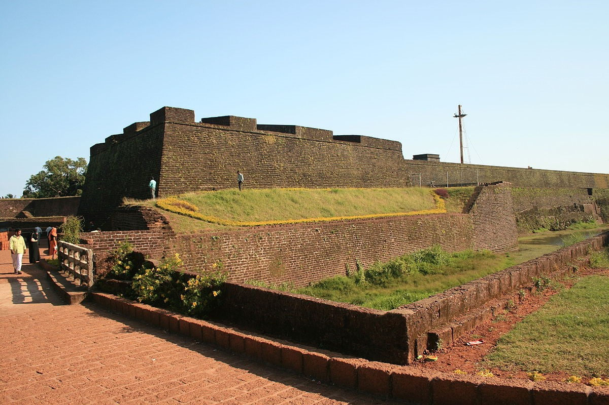
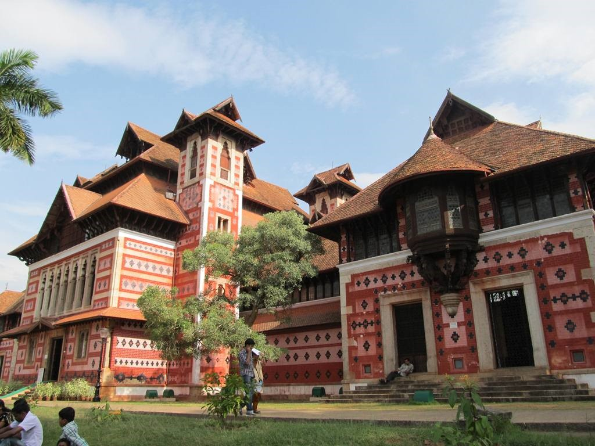
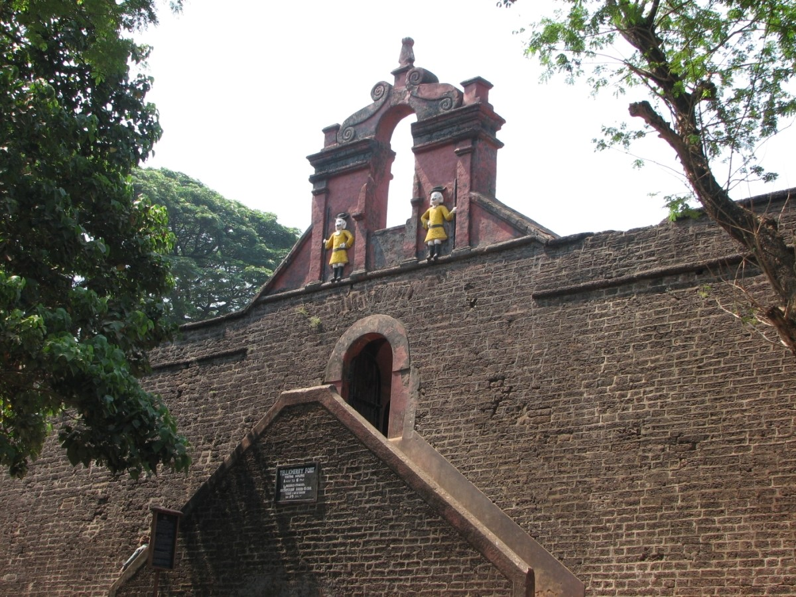

Kannur is the sixth-most urbanised district in Kerala, with more than 50% of its residents living in urban areas. It was part of the Malabar District under the Madras province during the British Raj. Kannur district was ruled by the Chera dynasty as per the recorded-history, from centuries before Christ till the medieval period, covered all of Kerala, Kanyakumari District and western Tamil Nadu.
How to Reach
You can reach Kannur by bus from big cities like Mangalore, Kochi, Bangalore, Thiruvananthapuram, Chennai, Mumbai and Coimbatore. Kannur is well connected to other cities Kochi, Kozhikode, Madras, Bangalore, Mangalore, Coimbatore, and Madurai by roads. NH 17 connecting Kochi and Mumbai passes through Kannur. The airports of Mangalore in Karnataka state & the International Airport of Kozhikode (Calicut) which is located in Malapuram are almost equidistant from Kannur City. .
Places to Visit
St. Angelo's Fort
St. Angelo's Fort was built in 1505 by Dom Francisco de Almeida, the first Portuguese Viceroy of India and is on the Arabian sea about 3 km from Kannur town.
Arackal Kottaram
Arackal Kottaram. Palace of Arackal Ali Rajas, the only Muslim royal family of Kerala, the palace is a treasure for history buffs.
Thalassery Fort
18th century fort built by british, and a light house.

St. Angelo's Fort
St. Angelo's Fort was built in 1505 by Dom Francisco de Almeida, the first Portuguese Viceroy of India and is on the Arabian sea about 3 km from Kannur town.

Arackal Kottaram
Palace of Arackal Ali Rajas, the only Muslim royal family of Kerala, the palace is a treasure for history buffs.

Thalassery Fort
18th century fort built by british, and a light house.